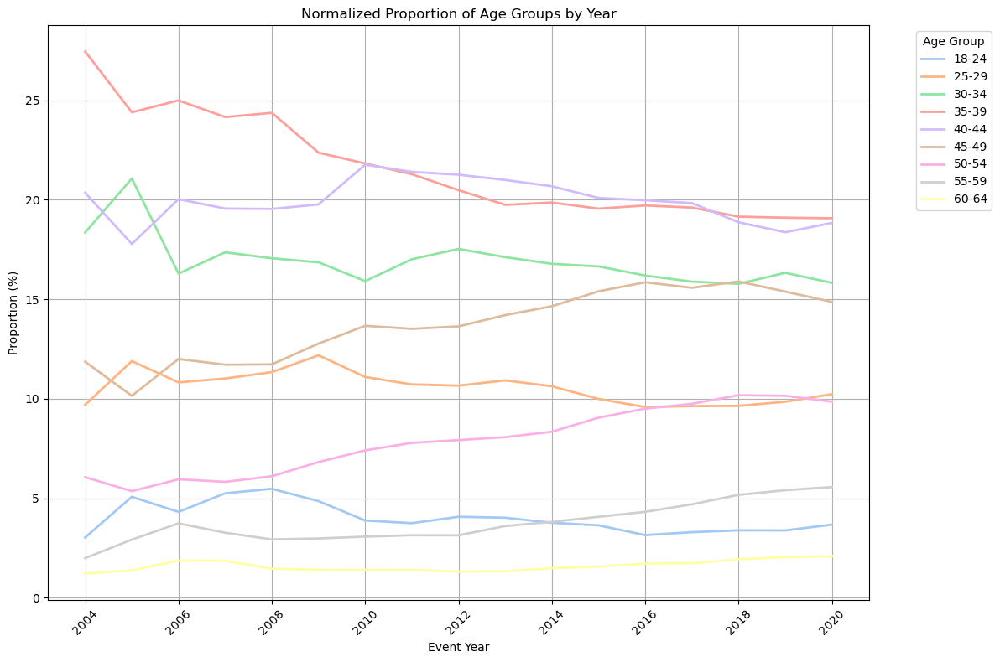
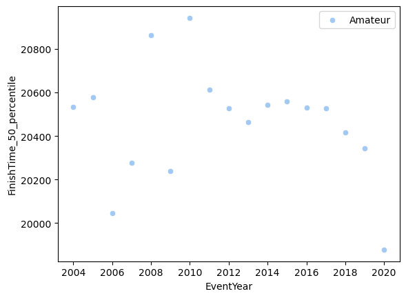
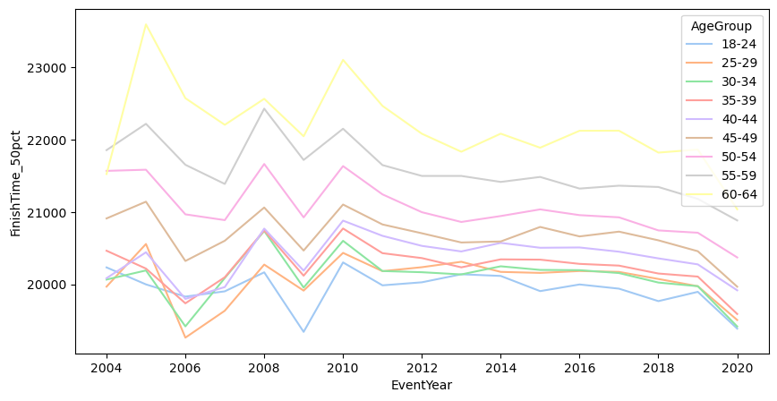
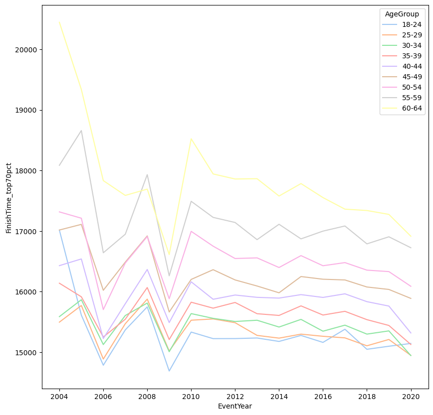

import pandas as pd
import seaborn as sns
import matplotlib.pyplot as plt
import matplotlib as mpl
import warnings
warnings.filterwarnings("ignore")
ironman_path = "../datasets/Half_Ironman_df6.csv"
df = pd.read_csv(ironman_path)
df['count'] = 1
df_men = df[df['Gender']== 'M']
df_amateur = df_men[df_men['AgeGroup'] != '00']
df_pro = df_men[df_men['AgeGroup'] == '00']time_cols = ['SwimTime', 'BikeTime', 'RunTime', 'FinishTime']
overall_rank_cols = []
yearly_rank_cols = []
for col in time_cols:
#assign a percentile rank to each row for each time
df_amateur[col + '_overall_rank'] = df_amateur[col].rank(pct=True)*100
overall_rank_cols.append(col + '_overall_rank')
#set order of age groups
age_order = ['18-24','25-29', '30-34', '35-39', '40-44', '45-49', '50-54', '55-59', '60-64']
df_amateur_workingage = df_amateur[df_amateur['AgeGroup'].isin(age_order)]
df_amateur_workingage['AgeGroup'] = pd.Categorical(df_amateur_workingage['AgeGroup'], categories=age_order, ordered=True)
df_amateur_workingage['Performance_category'] = pd.cut(df_amateur_workingage['FinishTime_overall_rank'], bins=[0,5,20,40,60,100], labels=['Elite', 'Sub-Elite', 'Above Average', 'Average', 'Below Average'])age_dist_year = df_amateur_workingage[['EventYear', 'AgeGroup', 'count']].groupby(['EventYear', 'AgeGroup']).sum()
#normalize counts and plot distributions
total_agegroup_counts_year = age_dist_year.groupby('EventYear')['count'].sum().reset_index()
age_dist_year['total'] = (age_dist_year.index.get_level_values('EventYear').map(total_agegroup_counts_year.set_index('EventYear')['count'])).astype(int)
age_dist_year['proportion'] = age_dist_year['count']/age_dist_year['total']*100
age_dist_year.reset_index(inplace=True)
pivot_df = age_dist_year.pivot(index='EventYear', columns='AgeGroup', values='proportion')
#set order of age groups
age_order = ['18-24','25-29', '30-34', '35-39', '40-44', '45-49', '50-54', '55-59', '60-64']
palette = sns.color_palette("pastel", len(age_order))
sns.set_palette(palette)
plt.figure(figsize=(12, 8))
for column in pivot_df.columns:
plt.plot(pivot_df.index, pivot_df[column], marker='', linewidth=2, label=column)
plt.title('Normalized Proportion of Age Groups by Year')
plt.xlabel('Event Year')
plt.ylabel('Proportion (%)')
plt.legend(title='Age Group', bbox_to_anchor=(1.05, 1), loc='upper left')
plt.grid(True)
plt.xticks(rotation=45)
plt.tight_layout() # Adjust layout to make room for the legend
plt.show()
#agestandardize to 2019 
pivot_df| AgeGroup | 18-24 | 25-29 | 30-34 | 35-39 | 40-44 | 45-49 | 50-54 | 55-59 | 60-64 |
|---|---|---|---|---|---|---|---|---|---|
| EventYear | |||||||||
| 2004 | 3.030303 | 9.696970 | 18.354978 | 27.445887 | 20.346320 | 11.861472 | 6.060606 | 1.991342 | 1.212121 |
| 2005 | 5.073052 | 11.891234 | 21.063312 | 24.391234 | 17.775974 | 10.146104 | 5.357143 | 2.922078 | 1.379870 |
| 2006 | 4.314721 | 10.821412 | 16.289802 | 24.988463 | 20.027688 | 11.998154 | 5.952930 | 3.737886 | 1.868943 |
| 2007 | 5.250644 | 11.016445 | 17.356846 | 24.152962 | 19.556172 | 11.709927 | 5.825243 | 3.269269 | 1.862493 |
| 2008 | 5.475458 | 11.339705 | 17.058156 | 24.364167 | 19.536692 | 11.728495 | 6.107241 | 2.932124 | 1.457962 |
| 2009 | 4.854687 | 12.181744 | 16.856324 | 22.365944 | 19.762587 | 12.771183 | 6.819484 | 2.979943 | 1.408105 |
| 2010 | 3.882320 | 11.094072 | 15.912668 | 21.816861 | 21.760362 | 13.664797 | 7.405464 | 3.071149 | 1.392308 |
| 2011 | 3.748437 | 10.718752 | 17.011124 | 21.282828 | 21.398012 | 13.512802 | 7.783190 | 3.142895 | 1.401961 |
| 2012 | 4.069457 | 10.658680 | 17.529223 | 20.480671 | 21.256730 | 13.634379 | 7.923073 | 3.138187 | 1.309599 |
| 2013 | 4.022096 | 10.921555 | 17.115538 | 19.742213 | 20.991215 | 14.202680 | 8.070814 | 3.605023 | 1.328867 |
| 2014 | 3.769255 | 10.626128 | 16.781117 | 19.858611 | 20.675227 | 14.646780 | 8.343316 | 3.814810 | 1.484756 |
| 2015 | 3.638609 | 9.990204 | 16.649867 | 19.551669 | 20.088303 | 15.399140 | 9.050384 | 4.067349 | 1.564474 |
| 2016 | 3.149912 | 9.582122 | 16.192765 | 19.711054 | 19.971508 | 15.853167 | 9.502979 | 4.316919 | 1.719573 |
| 2017 | 3.295002 | 9.630507 | 15.885220 | 19.605731 | 19.829258 | 15.575514 | 9.746310 | 4.695411 | 1.737046 |
| 2018 | 3.388878 | 9.641831 | 15.774756 | 19.148311 | 18.867394 | 15.893507 | 10.178127 | 5.171423 | 1.935772 |
| 2019 | 3.383428 | 9.849946 | 16.328016 | 19.096905 | 18.364542 | 15.385415 | 10.147974 | 5.404937 | 2.038836 |
| 2020 | 3.674685 | 10.229530 | 15.824321 | 19.068638 | 18.836901 | 14.864268 | 9.854337 | 5.561686 | 2.085632 |
### What does average mean?
#45 - 55th percentile
df_amateur_yearly_avg = pd.DataFrame(df_amateur['EventYear'].unique()).rename(columns={0:'EventYear'})
for i in range (0,60,5):
for col in time_cols:
colname = col + '_'+str(100-i)+'_percentile'
quantile_data = df_amateur.groupby(['EventYear'])[col].quantile(i/100).reset_index()
#convert to hh:mm:ss format
quantile_data.rename(columns={col:colname}, inplace=True)
df_amateur_yearly_avg = pd.merge(df_amateur_yearly_avg, quantile_data, on='EventYear', how='left')
#sort by event year
df_amateur_yearly_avg = df_amateur_yearly_avg.sort_values(by='EventYear')
df_pro_yearly_avg = pd.DataFrame(df_pro['EventYear'].unique()).rename(columns={0:'EventYear'})
for i in range (0,60,5):
for col in time_cols:
colname = col + '_'+str(100-i)+'_percentile'
quantile_data = df_pro.groupby(['EventYear'])[col].quantile(i/100).reset_index()
#convert to hh:mm:ss format
quantile_data.rename(columns={col:colname}, inplace=True)
df_pro_yearly_avg = pd.merge(df_pro_yearly_avg, quantile_data, on='EventYear', how='left')
#sort by event year
df_pro_yearly_avg = df_pro_yearly_avg.sort_values(by='EventYear')#scatter plot of event year by 50th percentile times
sns.scatterplot(data=df_amateur_yearly_avg, x='EventYear', y='FinishTime_50_percentile', label='Amateur')
df_amateur_yearly_avg.reset_index(drop=True)
yoy_change_df = pd.DataFrame(df_amateur_yearly_avg['EventYear']).rename(columns={0:'EventYear'}).reset_index(drop=True)
for j in [50,65,80,90,95]:
colname = 'FinishTime_'+str(j)+'_percentile'
yoy_change_list = [0]
for i in range (1,len(df_amateur_yearly_avg['EventYear'])):
yoy_change = (df_amateur_yearly_avg.loc[i, colname]/df_amateur_yearly_avg.loc[i-1, colname]-1)*100
yoy_change_list.append(yoy_change)
yoy_colname = 'yoy_change_{}pct'.format(j)
yoy_change_df[yoy_colname] = yoy_change_list
yoy_change_df_long = pd.melt(yoy_change_df, id_vars=['EventYear'], value_vars=['yoy_change_50pct', 'yoy_change_65pct', 'yoy_change_80pct', 'yoy_change_90pct', 'yoy_change_95pct'], var_name = 'Average Finish Time (percentile)', value_name = 'YoY Change (%)')
plt.figure(figsize=(8,5))
sns.lineplot(data=yoy_change_df_long, x='EventYear', y='YoY Change (%)', hue='Average Finish Time (percentile)')
legend_labels = ['50th percentile', '65th percentile', '80th percentile', '90th percentile', '95th percentile']
plt.legend(loc='lower center', labels = legend_labels)
#average yearly change in finish time for amateur athletes by percentile
#remove first row
avg_change_df_pct = yoy_change_df[1:][['yoy_change_50pct','yoy_change_65pct','yoy_change_80pct','yoy_change_90pct','yoy_change_95pct']].agg(['mean', 'median'])avg_change_df_pct| yoy_change_50pct | yoy_change_65pct | yoy_change_80pct | yoy_change_90pct | yoy_change_95pct | |
|---|---|---|---|---|---|
| mean | -0.019772 | -0.021941 | -0.054345 | -0.092420 | -0.117380 |
| median | -0.072977 | -0.137429 | -0.138809 | -0.145364 | -0.540181 |
#plot yoy_change distributions df_amateur_yearly_avg.columnsIndex(['EventYear', 'SwimTime_100_percentile', 'BikeTime_100_percentile',
'RunTime_100_percentile', 'FinishTime_100_percentile',
'SwimTime_95_percentile', 'BikeTime_95_percentile',
'RunTime_95_percentile', 'FinishTime_95_percentile',
'SwimTime_90_percentile', 'BikeTime_90_percentile',
'RunTime_90_percentile', 'FinishTime_90_percentile',
'SwimTime_85_percentile', 'BikeTime_85_percentile',
'RunTime_85_percentile', 'FinishTime_85_percentile',
'SwimTime_80_percentile', 'BikeTime_80_percentile',
'RunTime_80_percentile', 'FinishTime_80_percentile',
'SwimTime_75_percentile', 'BikeTime_75_percentile',
'RunTime_75_percentile', 'FinishTime_75_percentile',
'SwimTime_70_percentile', 'BikeTime_70_percentile',
'RunTime_70_percentile', 'FinishTime_70_percentile',
'SwimTime_65_percentile', 'BikeTime_65_percentile',
'RunTime_65_percentile', 'FinishTime_65_percentile',
'SwimTime_60_percentile', 'BikeTime_60_percentile',
'RunTime_60_percentile', 'FinishTime_60_percentile',
'SwimTime_55_percentile', 'BikeTime_55_percentile',
'RunTime_55_percentile', 'FinishTime_55_percentile',
'SwimTime_50_percentile', 'BikeTime_50_percentile',
'RunTime_50_percentile', 'FinishTime_50_percentile'],
dtype='object')def seconds_to_hhmmss(seconds):
hours = seconds // 3600
minutes = (seconds % 3600) // 60
seconds = seconds % 60
return f'{int(hours):02}:{int(minutes):02}:{int(seconds):02}'
#plot above average 55th to 69th percentile finish times
#create plot, size 5, 10
axs = plt.figure(layout = 'constrained', figsize= (12,6)).subplot_mosaic(
"""ABC;DDD"""
)
#plot above average 55th to 69th percentile finish times
sns.lineplot(data = df_amateur_yearly_avg, x = 'EventYear', y = 'SwimTime_50_percentile', label = 'Swim (Amateur)', color = 'blue', ax=axs['A'])
axs['A'].fill_between(df_amateur_yearly_avg['EventYear'], df_amateur_yearly_avg['SwimTime_45_percentile'], df_amateur_yearly_avg['SwimTime_55_percentile'], alpha=0.2, color = 'blue')
sns.lineplot(data = df_pro_yearly_avg, x = 'EventYear', y = 'SwimTime_50_percentile', label = 'Swim (Pro)', linestyle='dotted', color = 'blue', ax = axs['A'])
axs['A'].fill_between(df_pro_yearly_avg['EventYear'], df_pro_yearly_avg['SwimTime_45_percentile'], df_pro_yearly_avg['SwimTime_55_percentile'], alpha=0.2, color = 'blue')
sns.lineplot(data = df_amateur_yearly_avg, x = 'EventYear', y = 'BikeTime_50_percentile', label = 'Bike (Amateur)', color = 'orange', ax = axs['B'])
axs['B'].fill_between(df_amateur_yearly_avg['EventYear'], df_amateur_yearly_avg['BikeTime_45_percentile'], df_amateur_yearly_avg['BikeTime_55_percentile'], alpha=0.2, color = 'orange')
sns.lineplot(data = df_pro_yearly_avg, x = 'EventYear', y = 'BikeTime_50_percentile', label = 'Bike (Pro)', linestyle='dotted', color = 'orange', ax = axs['B'])
axs['B'].fill_between(df_pro_yearly_avg['EventYear'], df_pro_yearly_avg['BikeTime_45_percentile'], df_pro_yearly_avg['BikeTime_55_percentile'], alpha=0.2, color = 'orange')
sns.lineplot(data = df_amateur_yearly_avg, x = 'EventYear', y = 'RunTime_50_percentile', label = 'Run (Amateur)', color = 'green', ax = axs['C'])
axs['C'].fill_between(df_amateur_yearly_avg['EventYear'], df_amateur_yearly_avg['RunTime_45_percentile'], df_amateur_yearly_avg['RunTime_55_percentile'], alpha=0.2, color = 'green')
sns.lineplot(data = df_pro_yearly_avg, x = 'EventYear', y = 'RunTime_50_percentile', label = 'Run (Pro)', linestyle='dotted', color = 'green', ax = axs['C'])
axs['C'].fill_between(df_pro_yearly_avg['EventYear'], df_pro_yearly_avg['RunTime_45_percentile'], df_pro_yearly_avg['RunTime_55_percentile'], alpha=0.2, color = 'green')
sns.lineplot(data = df_amateur_yearly_avg, x = 'EventYear', y = 'FinishTime_50_percentile', label = 'Finish (Amateur)', color = 'red', ax = axs['D'])
axs['D'].fill_between(df_amateur_yearly_avg['EventYear'], df_amateur_yearly_avg['FinishTime_45_percentile'], df_amateur_yearly_avg['FinishTime_55_percentile'], alpha=0.2, color = 'red')
sns.lineplot(data = df_pro_yearly_avg, x = 'EventYear', y = 'FinishTime_50_percentile', label = 'Finish (Pro)', linestyle='dotted', color = 'red', ax = axs['D'])
axs['D'].fill_between(df_pro_yearly_avg['EventYear'], df_pro_yearly_avg['FinishTime_45_percentile'], df_pro_yearly_avg['FinishTime_55_percentile'], alpha=0.2, color = 'red')
from matplotlib.ticker import FuncFormatter, MultipleLocator
formatter = FuncFormatter(lambda x, _: seconds_to_hhmmss(x))
axs['A'].yaxis.set_major_formatter(formatter)
axs['A'].yaxis.set_major_locator(MultipleLocator(base=120))
axs['A'].set_ylabel('Swim Finish Time')
axs['A'].set_ylim(1200,2640)
axs['B'].yaxis.set_major_formatter(formatter)
axs['B'].yaxis.set_major_locator(MultipleLocator(base=300))
axs['B'].set_ylabel('Bike Finish Time')
axs['B'].set_ylim(7200,10800)
axs['C'].yaxis.set_major_formatter(formatter)
axs['C'].yaxis.set_major_locator(MultipleLocator(base=300))
axs['C'].set_ylabel('Run Finish Time')
axs['C'].set_ylim(4500,8100)
axs['D'].yaxis.set_major_formatter(formatter)
axs['D'].yaxis.set_major_locator(MultipleLocator(base=600))
axs['D'].set_ylim(13500,21600)
plt.ylabel('Finish Time')
plt.xlabel('Year')
# sns.move_legend(, "upper left", bbox_to_anchor=(1, 1))
#Convert seconds to hours, mm and
# # Combine legends from all subplots into one
# handles, labels = axs[0].get_legend_handles_labels()
# plt.tight_layout(rect=[0.05, 0.1, 0.95, 0.95])
plt.show()--------------------------------------------------------------------------- KeyError Traceback (most recent call last) c:\Users\dkraj2\Anaconda3\lib\site-packages\pandas\core\indexes\base.py in get_loc(self, key, method, tolerance) 3628 try: -> 3629 return self._engine.get_loc(casted_key) 3630 except KeyError as err: c:\Users\dkraj2\Anaconda3\lib\site-packages\pandas\_libs\index.pyx in pandas._libs.index.IndexEngine.get_loc() c:\Users\dkraj2\Anaconda3\lib\site-packages\pandas\_libs\index.pyx in pandas._libs.index.IndexEngine.get_loc() pandas\_libs\hashtable_class_helper.pxi in pandas._libs.hashtable.PyObjectHashTable.get_item() pandas\_libs\hashtable_class_helper.pxi in pandas._libs.hashtable.PyObjectHashTable.get_item() KeyError: 'SwimTime_45_percentile' The above exception was the direct cause of the following exception: KeyError Traceback (most recent call last) ~\AppData\Local\Temp\ipykernel_16916\2855531880.py in <module> 13 14 sns.lineplot(data = df_amateur_yearly_avg, x = 'EventYear', y = 'SwimTime_50_percentile', label = 'Swim (Amateur)', color = 'blue', ax=axs['A']) ---> 15 axs['A'].fill_between(df_amateur_yearly_avg['EventYear'], df_amateur_yearly_avg['SwimTime_45_percentile'], df_amateur_yearly_avg['SwimTime_55_percentile'], alpha=0.2, color = 'blue') 16 sns.lineplot(data = df_pro_yearly_avg, x = 'EventYear', y = 'SwimTime_50_percentile', label = 'Swim (Pro)', linestyle='dotted', color = 'blue', ax = axs['A']) 17 axs['A'].fill_between(df_pro_yearly_avg['EventYear'], df_pro_yearly_avg['SwimTime_45_percentile'], df_pro_yearly_avg['SwimTime_55_percentile'], alpha=0.2, color = 'blue') c:\Users\dkraj2\Anaconda3\lib\site-packages\pandas\core\frame.py in __getitem__(self, key) 3503 if self.columns.nlevels > 1: 3504 return self._getitem_multilevel(key) -> 3505 indexer = self.columns.get_loc(key) 3506 if is_integer(indexer): 3507 indexer = [indexer] c:\Users\dkraj2\Anaconda3\lib\site-packages\pandas\core\indexes\base.py in get_loc(self, key, method, tolerance) 3629 return self._engine.get_loc(casted_key) 3630 except KeyError as err: -> 3631 raise KeyError(key) from err 3632 except TypeError: 3633 # If we have a listlike key, _check_indexing_error will raise KeyError: 'SwimTime_45_percentile'

#find age group distributions where the middle 50% of finish times are
df_working_age = df_amateur[df_amateur['AgeGroup'].isin(['18-24','25-29', '30-34', '35-39', '40-44', '45-49', '50-54', '55-59', '60-64'])]
plt.figure(figsize=(10,5))
agegrp_mid = df_working_age[['EventYear', 'AgeGroup', 'FinishTime']].groupby(['EventYear', 'AgeGroup'])['FinishTime'].quantile([0.45, 0.5, 0.55]).unstack().reset_index()
agegrp_mid.rename(columns={0.45:'FinishTime_45pct', 0.5:'FinishTime_50pct', 0.55:'FinishTime_55pct'}, inplace=True)
#plot average finish times across the years, across the different age groups
agegrp_plot = sns.lineplot(data = agegrp_mid, x = 'EventYear', y = 'FinishTime_50pct', hue = 'AgeGroup')
#find age group distributions where the middle 50% of finish times are
plt.figure(figsize=(10,10))
agegrp_abvabg = df_working_age[['EventYear', 'AgeGroup', 'FinishTime']].groupby(['EventYear', 'AgeGroup'])['FinishTime'].quantile([0.2, 0.1, 0.01]).unstack().reset_index()
agegrp_abvabg.rename(columns={0.2:'FinishTime_top60pct', 0.1:'FinishTime_top65pct', 0.01:'FinishTime_top70pct'}, inplace=True)
#plot average finish times across the years, across the different age groups
agegrp_plot = sns.lineplot(data = agegrp_abvabg, x = 'EventYear', y = 'FinishTime_top70pct', hue = 'AgeGroup')
df_pro| Gender | AgeGroup | AgeBand | Country | CountryISO2 | EventYear | EventLocation | SwimTime | Transition1Time | BikeTime | Transition2Time | RunTime | FinishTime | count | |
|---|---|---|---|---|---|---|---|---|---|---|---|---|---|---|
| 424 | M | 00 | 0 | United Arab Emirates | AE | 2011 | IRONMAN 70.3 Asia-Pacific | 1433 | 96 | 8638 | 105 | 4837 | 15109 | 1 |
| 477 | M | 00 | 0 | United Arab Emirates | AE | 2012 | IRONMAN 70.3 World Championship | 1449 | 163 | 7985 | 74 | 4936 | 14607 | 1 |
| 802 | M | 00 | 0 | Argentina | AR | 2019 | IRONMAN 70.3 South American Championship Bueno... | 1385 | 82 | 7736 | 67 | 4735 | 14006 | 1 |
| 803 | M | 00 | 0 | Argentina | AR | 2019 | IRONMAN 70.3 South American Championship Bueno... | 1620 | 94 | 7741 | 74 | 4635 | 14164 | 1 |
| 835 | M | 00 | 0 | Argentina | AR | 2019 | IRONMAN 70.3 South American Championship Bueno... | 1752 | 123 | 8504 | 94 | 5813 | 16285 | 1 |
| ... | ... | ... | ... | ... | ... | ... | ... | ... | ... | ... | ... | ... | ... | ... |
| 838622 | M | 00 | 0 | South Africa | ZA | 2015 | IRONMAN 70.3 South Africa | 1671 | 179 | 10014 | 157 | 5053 | 17074 | 1 |
| 839832 | M | 00 | 0 | South Africa | ZA | 2015 | IRONMAN 70.3 St. George | 1559 | 120 | 7968 | 61 | 4776 | 14484 | 1 |
| 839848 | M | 00 | 0 | South Africa | ZA | 2015 | IRONMAN 70.3 Budapest | 1693 | 114 | 7923 | 104 | 4190 | 14024 | 1 |
| 839908 | M | 00 | 0 | South Africa | ZA | 2015 | IRONMAN 70.3 Switzerland | 1437 | 115 | 8780 | 80 | 5366 | 15778 | 1 |
| 839946 | M | 00 | 0 | South Africa | ZA | 2015 | IRONMAN 70.3 Busselton | 1545 | 95 | 7693 | 60 | 4267 | 13660 | 1 |
10282 rows × 14 columns
agegrp_abvabg| EventYear | AgeGroup | FinishTime_60pct | FinishTime_65pct | FinishTime_70pct | |
|---|---|---|---|---|---|
| 0 | 2004 | 18-24 | 21126.6 | 21464.70 | 21684.8 |
| 1 | 2004 | 25-29 | 20660.8 | 20876.10 | 21550.6 |
| 2 | 2004 | 30-34 | 20733.0 | 21024.90 | 21473.8 |
| 3 | 2004 | 35-39 | 21039.8 | 21359.00 | 21571.4 |
| 4 | 2004 | 40-44 | 21010.8 | 21282.90 | 21605.8 |
| ... | ... | ... | ... | ... | ... |
| 97 | 2020 | 25-29 | 20120.0 | 20463.40 | 20902.2 |
| 98 | 2020 | 30-34 | 20212.2 | 20644.35 | 21063.2 |
| 99 | 2020 | 35-39 | 20417.4 | 20798.10 | 21137.5 |
| 100 | 2020 | 40-44 | 20721.6 | 21090.80 | 21540.0 |
| 101 | 2020 | 45-49 | 20804.6 | 21151.50 | 21609.8 |
102 rows × 5 columns
agegrp_mid| EventYear | AgeGroup | FinishTime_45pct | FinishTime_50pct | FinishTime_55pct | |
|---|---|---|---|---|---|
| 0 | 2004 | 18-24 | 19629.80 | 20234.0 | 20777.50 |
| 1 | 2004 | 25-29 | 19729.25 | 19968.0 | 20438.15 |
| 2 | 2004 | 30-34 | 19790.70 | 20066.0 | 20358.25 |
| 3 | 2004 | 35-39 | 20033.60 | 20465.0 | 20783.80 |
| 4 | 2004 | 40-44 | 19750.80 | 20085.0 | 20642.30 |
| ... | ... | ... | ... | ... | ... |
| 97 | 2020 | 25-29 | 19192.60 | 19506.0 | 19785.90 |
| 98 | 2020 | 30-34 | 19115.55 | 19416.5 | 19799.15 |
| 99 | 2020 | 35-39 | 19257.45 | 19589.5 | 19987.10 |
| 100 | 2020 | 40-44 | 19558.70 | 19917.0 | 20288.60 |
| 101 | 2020 | 45-49 | 19595.20 | 19967.0 | 20349.90 |
102 rows × 5 columns
# df_50thpercentile['FinishTime_hhmmss'] = pd.to_datetime(df_50thpercentile['FinishTime'], unit='s').dt.strftime('%H:%M:%S')
for col in time_cols:
newcol = col + '_hhmmss'
df_50thpercentile_amateur[newcol] = pd.to_datetime(df_50thpercentile_amateur[col], unit='s').dt.strftime('%H:%M:%S')
df_50thpercentile_amateur
#plot the evolution of the 50th percentile finish time over the years--------------------------------------------------------------------------- NameError Traceback (most recent call last) ~\AppData\Local\Temp\ipykernel_16916\3085472093.py in <module> 3 for col in time_cols: 4 newcol = col + '_hhmmss' ----> 5 df_50thpercentile_amateur[newcol] = pd.to_datetime(df_50thpercentile_amateur[col], unit='s').dt.strftime('%H:%M:%S') 6 7 df_50thpercentile_amateur NameError: name 'df_50thpercentile_amateur' is not defined
#plot histogram of finish time
sns.histplot(df['FinishTime'])
time_cols
##00 = professionals
#encoding pro status
df['Pro_status'] = df['AgeGroup'].apply(lambda x: 1 if x == '00' else 0)
df['AgeGroup'].unique()array(['40-44', '45-49', '35-39', '50-54', '25-29', '18-24', '30-34',
'55-59', '00', '60-64', '70-74', '65-69', '75-79', '80-84',
'85-89'], dtype=object)finishers_yeargrp = df[['EventYear', 'Gender', 'count']].groupby(['EventYear', 'Gender']).sum().reset_index()
yeargrp = df[['EventYear', 'Gender', 'count']].groupby(['EventYear']).sum().reset_index()
yeargrp['Gender'] = 'Total'
finishers_yeargrp = pd.concat([finishers_yeargrp, yeargrp]).reset_index(drop=True)#plot number of finishers by year
sns.set_theme(style="darkgrid")
finisher_countplt = sns.lineplot(data=finishers_yeargrp, x='EventYear', y='count', hue='Gender')
finisher_countplt.set(title='Number of Finishers by Year', xlabel='Year', ylabel='Number of Finishers')
# Formatting y-axis
finisher_countplt.get_yaxis().set_major_formatter(mpl.ticker.StrMethodFormatter('{x:,.0f}'))#figure out the age